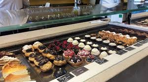
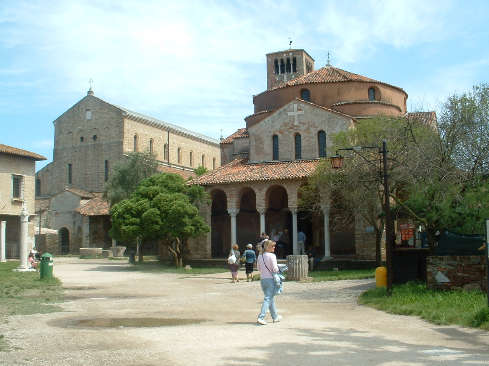

Dagprogramma 1
Majer ontbijt restaurant
De kosten hangt af van wat je bestelt.
Dit is een trip zodat je gewoon even kunt onbijten.
Rencensie
De rencensie kun je op deze link zien.Over Majer
Majer is een Heerlijk klein restaurantje aan de overzijde van het grande canal tegenover Piazza SAN Marco. Even weg uit de drukte, lekker langs de kade. Heerlijke broodjes, fantastische verse en zelfgeperste sappen, lokale biertjes en lekkere wijn.Torcello
 De prijs van deze tocht is €20.De tocht is 4 uur
Over torcello
Torcello maakt deel uit van de venetiaanse eilanden. De andere eilanden zijn Burano en Murano.Torcello is een rustig eiland in het noordelijke deel van Laguna Veneta. De naam komt waarschijnlijk van de stadspoort of toren van Altino. Het eiland staat bekend als de voorloper van Venetië. In de 7e eeuw vluchtten de bisschop en inwoners van Altino naar dit eiland, opgejaagd door de Longobarden. U moet zelf een lunch meenemen.
Centrum

U kunt blijven in het centrum zolang als je wilt maar je moet rekening houden met het restaurant.
Ristorante Cinese Al Leon D'Oro

Rencensie
Je kan eten tot 22:30 en dan is het dagprogramma voorbij.Over Ristorante Cinese Al Leon D'Oro
Ristorante Cinese Al Leon D'Oro is een Chinees restaurant in Venetie. het menu is heel verleidelijk om te laten liggen. Alle ingrediënten zijn vers en MSG gratis. Buiten zit echt toegevoegd aan de ervaring.De rencensie kun je op deze link zien.